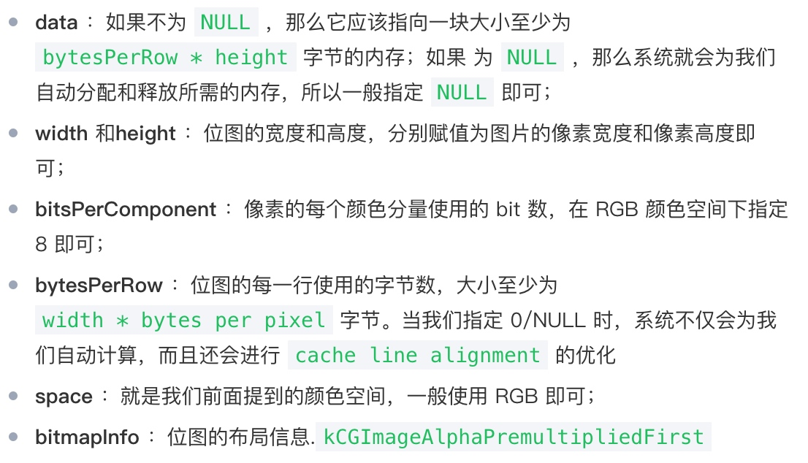

iOS 中的图片解码
图片占用内存的大小计算方式
为什么要有解码,图片不解码直接显示可不可以?很遗憾,不解码直接显示是不可以的,因为在iOS 中,加载的图片大部分都是 PNG,或者 JPEG 格式的,而这两种格式的图片都是压缩的格式,而显示在屏幕上的图片叫位图(bitmap),其实我们的解码的目的就是把压缩后的图片变成位图.
可能你会说,我直接传入的图片就是位图(bitmap)格式的不就行了,理论上来讲,是可以的,但是你要明白为什么我们会有压缩图片格式,不管是无损压缩还是有损压缩,都是为了减少空间,bitmap 虽然不用解码,但是占用的空间实在太大了,计算公式:
size = width * height * bytesPerPixel
一般情况下 bytesPerPixel= 4. 表示每个像素的大小为 4B.
所以一张 100*100 像素的内存空间大小就是:
size = 100 * 100 *4 = 40000B = 39KB
然而压缩后的 PNG 和 JPEG100*100 的图像大小可能只有几 KB 而已.所以直接使用 bitmap 不显示.
iOS 中图片的显示过程
一.图片从文件到屏幕的过程
一般来讲,计算机在显示的时候,CPU 和 GPU 协同合作才能完成一次渲染,他们是有分工的:
- CPU:计算视图 frame,图片解码,需要绘制纹理图片通过数据总线交给 GPU
- GPU:纹理混合,顶点变换与计算,像素点的填充计算,渲染到帧缓冲区
- 时钟信号:垂直同步信号(V-Sync) / 水平同步信号(H-Sync)
- iOS 设备双缓冲机制:显示系统通常引入两个帧缓冲区.
关于双缓冲机制可以看下:这个文章
二,图片加载的流程
- 假设我们使用
+imageWithContentOfFile:方法从磁盘加载一张图片,其实这个时候图片并没有解压缩 - 然后将生成的
UIImage赋值给UIImageView; - 紧接着一个隐式的
CATransaction捕获到了UIImageView图层数的变化; 在主线程的下一个
RunLoop到来时,Core Animation提交了这个隐式的transaction,这个过程可能会对图片进行 copy 操作,而受图片是否字节对齐等因素的影响,这个 copy 操作可能会涉及到以下部分或者全部步骤:- 分配内存缓冲区用于文件 IO 和解压缩操作;
- 将文件数据从磁盘读到内存中;
- 将压缩的图片数据解码成未压缩的位图形式,这是一个非常耗时的 CPU 操作;
- 最后
Core Animation中的CALayer使用未压缩的位图数据渲染UIImageView的图层 - CPU 计算好图片的 Frame,对图片解压之后,就会交给 GPU 来做图片渲染的流程
- GPU获取图片的坐标
- 将坐标交给顶点着色器(顶点计算)
- 将图片光栅化(获取图片对应屏幕上的像素点)
- 片元着色器计算(计算每个像素点的最终显示的颜色值)
- 从帧缓存区中渲染到屏幕上
解码发生在哪个阶段,怎么优化
图片解压缩是一个非常耗时的 CPU 操作,并且图片的解压缩操作不可避免,我们也不想他发生在主线程,避免造成卡顿,业界的解决方案是在子线程对图片进行强制解压缩,因为如果图片已经解压缩过了,系统就不会再次对图片解压缩.
强制解压缩的原理就是对图片重新绘制,得到一张新的解压缩位图.
这一过程使用到的最核心的函数就是CGBitmapContextCreate:
CG_EXTERN CGContextRef __nullable CGBitmapContextCreate(void * __nullable data,
size_t width, size_t height, size_t bitsPerComponent, size_t bytesPerRow,
CGColorSpaceRef cg_nullable space, uint32_t bitmapInfo)
CG_AVAILABLE_STARTING(10.0, 2.0);

开源框架的实现
YYImage\SDWebImage 都有关于解压缩的实现
例如 YYImage:
CGImageRef YYCGImageCreateDecodedCopy(CGImageRef imageRef, BOOL decodeForDisplay) {
...
if (decodeForDisplay) { // decode with redraw (may lose some precision)
CGImageAlphaInfo alphaInfo = CGImageGetAlphaInfo(imageRef) & kCGBitmapAlphaInfoMask;
BOOL hasAlpha = NO;
if (alphaInfo == kCGImageAlphaPremultipliedLast ||
alphaInfo == kCGImageAlphaPremultipliedFirst ||
alphaInfo == kCGImageAlphaLast ||
alphaInfo == kCGImageAlphaFirst) {
hasAlpha = YES;
}
// BGRA8888 (premultiplied) or BGRX8888
// same as UIGraphicsBeginImageContext() and -[UIView drawRect:]
CGBitmapInfo bitmapInfo = kCGBitmapByteOrder32Host;
bitmapInfo |= hasAlpha ? kCGImageAlphaPremultipliedFirst : kCGImageAlphaNoneSkipFirst;
CGContextRef context = CGBitmapContextCreate(NULL, width, height, 8, 0, YYCGColorSpaceGetDeviceRGB(), bitmapInfo);
if (!context) return NULL;
CGContextDrawImage(context, CGRectMake(0, 0, width, height), imageRef); // decode
CGImageRef newImage = CGBitmapContextCreateImage(context);
CFRelease(context);
return newImage;
} else {
...
}
}
它接受一个原始的位图参数 imageRef ，最终返回一个新的解压缩后的位图 newImage ，中间主要经过了以下三个步骤：
使用 CGBitmapContextCreate 函数创建一个位图上下文；
使用 CGContextDrawImage 函数将原始位图绘制到上下文中；
使用 CGBitmapContextCreateImage 函数创建一张新的解压缩后的位图。
事实上，SDWebImage 中对图片的解压缩过程与上述完全一致，只是传递给 CGBitmapContextCreate 函数的部分参数存在细微的差别
小结
- 图片文件只有在确认要显示时,CPU才会对齐进行解压缩.因为解压是非常消耗性能的事情.解压过的图片就不会重复解压,会缓存起来.
- 图片渲染到屏幕的过程: 读取文件->计算Frame->图片解码->解码后纹理图片位图数据通过数据总线交给GPU->GPU获取图片Frame->顶点变换计算->光栅化->根据纹理坐标获取每个像素点的颜色值(如果出现透明值需要将每个像素点的颜色*透明度值)->渲染到帧缓存区->渲染到屏幕
参考:
http://blog.leichunfeng.com/blog/2017/02/20/talking-about-the-decompression-of-the-image-in-ios/
https://code.imerc.cc/2017/07/09/ios-image-decode/
Copyright © 2015 Powered by MWeb, Theme used GitHub CSS.